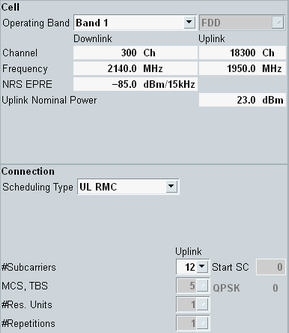

Settings
The main view provides the most important settings for fast access.

Settings in the main view
The upper part contains the following settings:
- RF frequency settings
See "RF Frequency" - Most important DL power parameters
See "Downlink Power Levels" - Most important UL power parameters
See "Uplink Power Control"
The contents of the lower part depend on the scheduling type. Refer to: